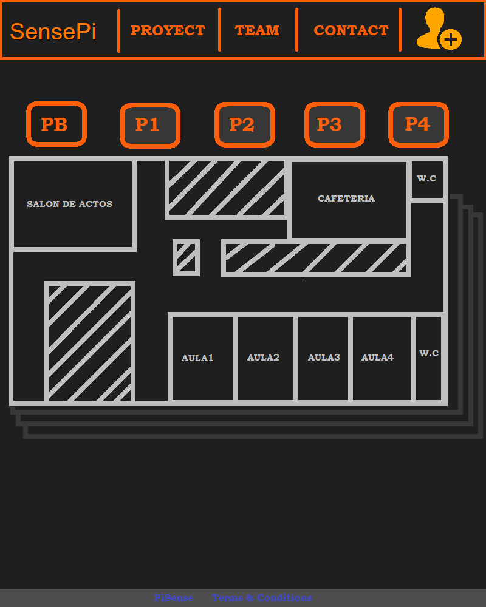
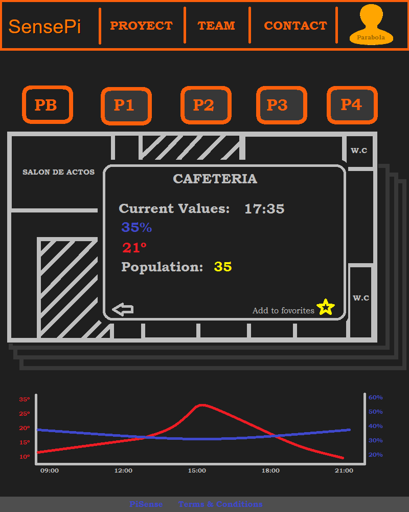
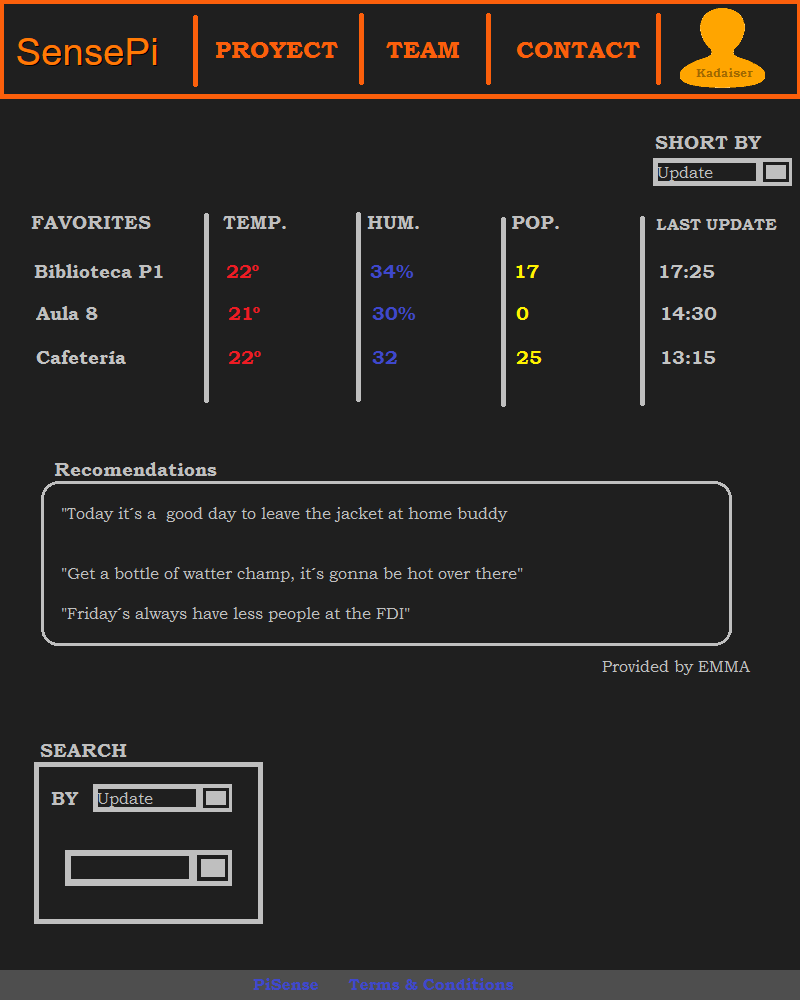
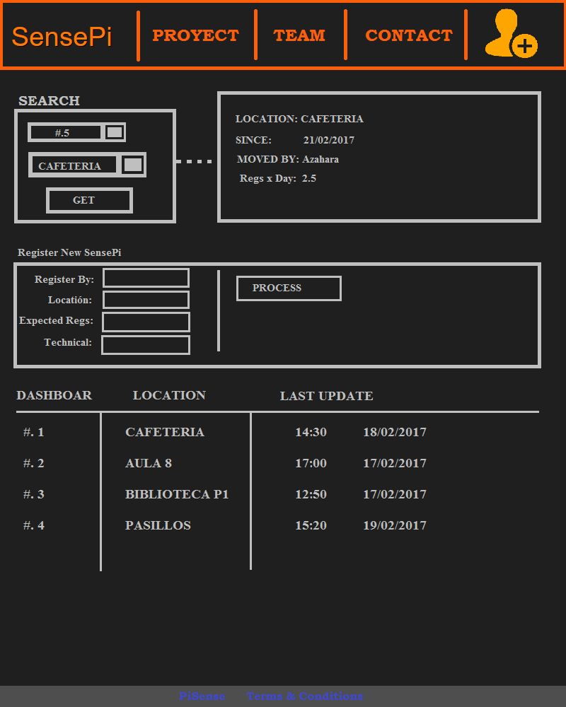
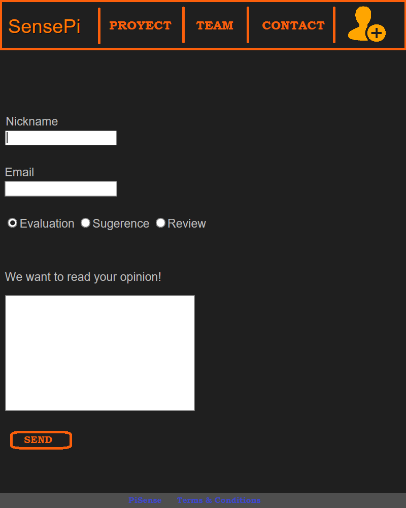
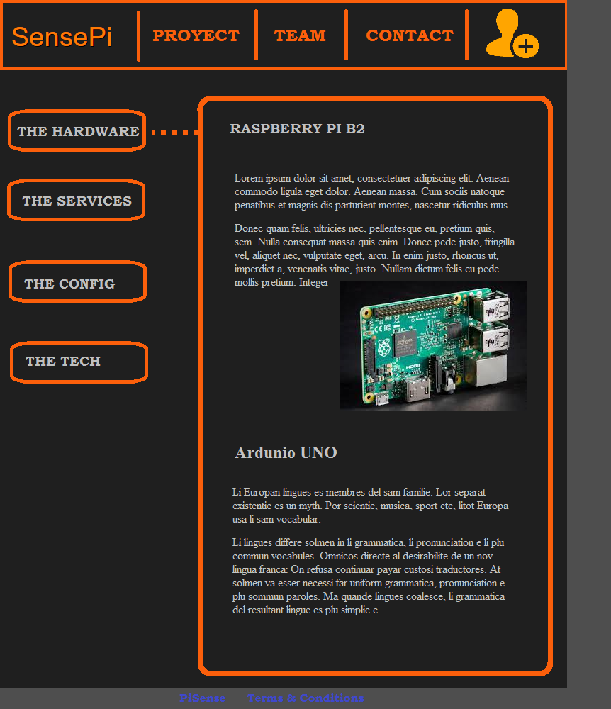
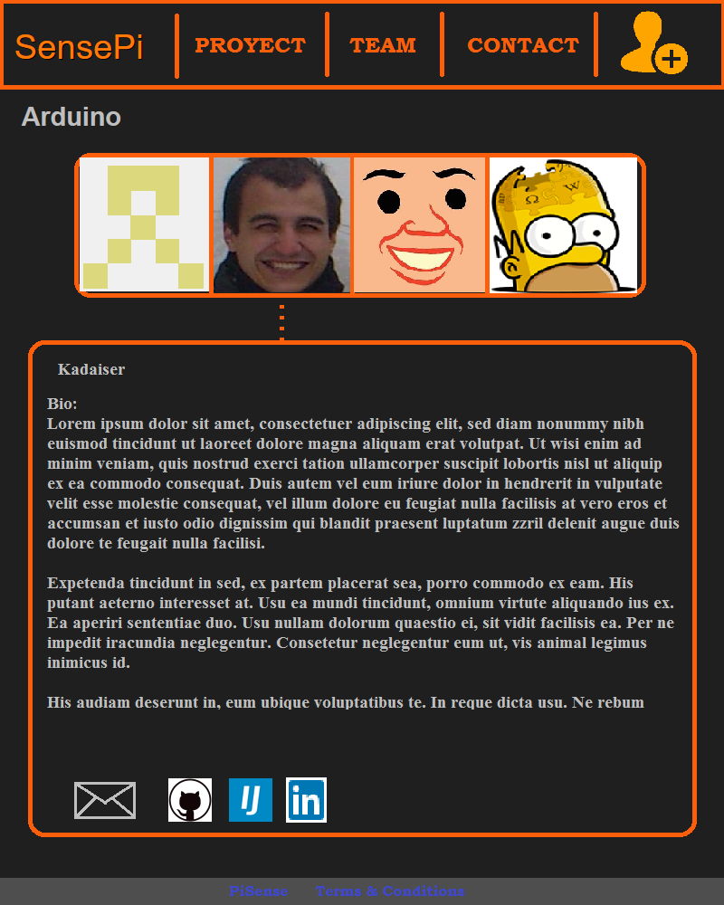

El usuario puede acceder al resto de vistas desde aquí, aunque en general, siempre dispondra de un menu anclado en la zona superior
Un usuario registrado, ademas, es capaz de obtener gráficas e información adicional al hacer click en alguna ubicación del plano
Al acceder al icono de registro en el menu, el usuario se encontrara con la vista de registro/login, donde puede dar de alta un nuevo usuario o acceder con un usuario ya registrado

Al logearse, un usuario sera redirigido a su página de usuario, donde puede consultar rapidamente sus localizaciones favoritas o consultar las opiniones de EMMA
Los usuarios con rango de administrador podran gestionar las "PiSense" repartidas por el edificio, reubicarlas, o generar nuevas por arte de mágia
Todos los usuarios dispondran de las vistas "públicas" como el contacto
Al tratarse de un proyecto basado en tecnologia libre y gratuita, nos parece razonable al mundo entero explicar como conseguir lo que ofrecemos a nuestros visitantes. Nosotros no lo habriamos logrado sin la generosidad de otros!!
Los auto-endiosados creadores de la página podran dejar fluir su ego y promocionarse en la red, dandose a conocer al mundo entero.
